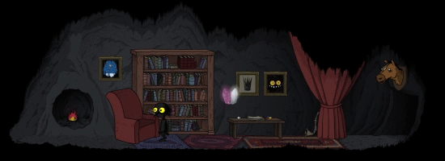

I build things that run on screens, sometimes useful, sometimes just for fun.
This site is where I drop experiments, ideas, and the occasional blog post.
Think of it as a digital notebook, but with cooler fonts.

What You’ll Stumble Upon
Projects that work… until they don’t
Thoughts on code, design, and other ways to waste brain cells
Ideas so wild they probably should’ve stayed in drafts
Stick around if you like. Worst case, you’ll see I can use a Grid and
style a
Border.
About Me
My name is Zakaria Tahri, a Software Engineer who mostly wrangles
.NET, WinAppSDK, and WinUI into creating desktop apps that
(hopefully) don’t crash.
I hold a Master’s degree in Computer Science (Software Engineering & Information Systems),
which basically means I spent years learning how to tell computers what to do while they
still somehow manage to sass me back.
On the technical side, I can work with C#, .NET, XAML, WinUI 3, Windows App SDK, a bit of web tech,
and I’m curious about AI, cloud stuff, and maybe even game dev in the future.
(Because why stop at making Windows apps when you can also accidentally create Skynet?)
I live in Algeria, powered mostly by tea .
When I’m not coding, you’ll probably catch me playing
my favorite videogame The Longing,
or watching Ali's live streams on TikTok,
or running around outside trying to convince myself that I enjoy jogging.
A few fun facts:
My idol in coding: Raymond Chen (of course)
Favorite color: Black (because it makes my code errors look classy)
Favorite song: “Fourth of July”
Favorite quote: The person who moves a mountain begins by carrying away small
stones. – Confucius
My Work
Basically, I work on desktop applications. Here are some highlights:
Contributions in WinUI
Gallery
: Most of the time I do this just so I can proudly say I’m contributing to a Microsoft project
(and feel like I’m important for at least five minutes ).
Hakim
: A desktop app for managing doctors’ patients, appointments, and more.
Not finished yet, but trust me… once I deal with my perfectionism, it’ll be one of the best.
NadimDB
: A database system I built for law office management.
Easily one of the most complex projects I’ve ever tackled.
MathRichEdit Demo
: A WinUI 3 sample showing off RichEditBox math input.
Proof that I am, in fact, a certified nerd.
Simplex Calculator
: Solves linear programming problems with the simplex method.
Another project that basically screams, “Yep, he’s a nerd.”
 ).
).